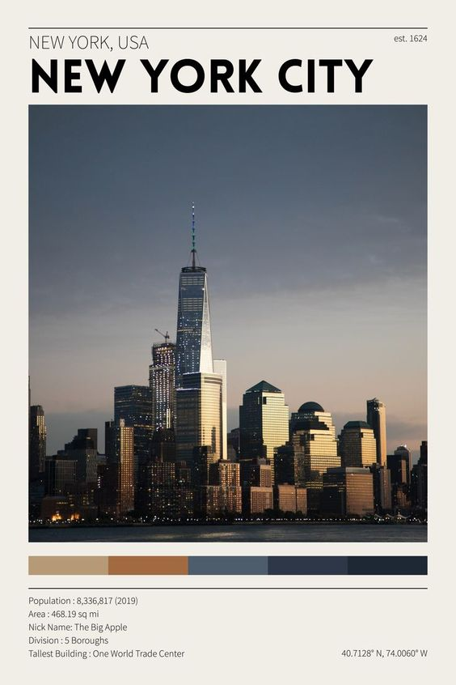
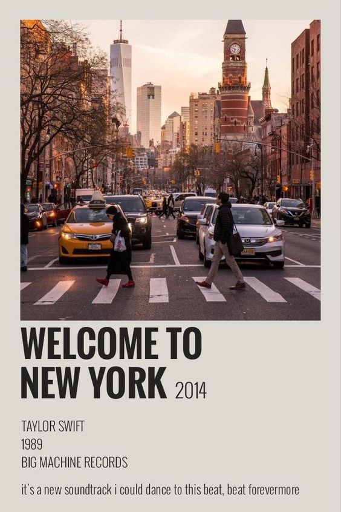
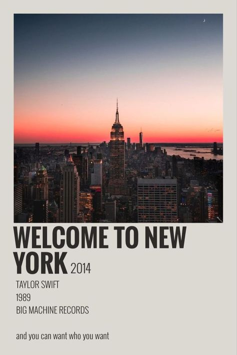

and vibrant cities in the world. Located in the northeastern United
States, it is a bustling metropolis that encompasses a diverse array
of cultures, attractions, and experiences.
1. **City of Boroughs:** NYC is composed of five boroughs: Manhattan,
Brooklyn, Queens, The Bronx, and Staten Island. Each borough has its
own unique character and attractions, contributing to the city's
incredible diversity.
2. **Skyscraper Capital:** Manhattan, in particular, is known for its
iconic skyline, filled with towering skyscrapers like the Empire State
Building, One World Trade Center, and the Chrysler Building. These
architectural marvels define the cityscape and offer breathtaking views.

3. **Cultural Melting Pot:** NYC is often called the "Melting Pot" due
to its incredibly diverse population. People from all over the world have
settled here, bringing with them their cultures, languages, and cuisines.
This diversity is celebrated through various cultural festivals, neighborhoods,
and restaurants.
4. **Arts and Entertainment:** The city is a hub for the arts, with world-renowned
institutions like the Metropolitan Museum of Art, the Museum of Modern Art (MoMA),
and the Broadway theater district. It's also home to numerous music venues,
theaters, and art galleries.

5. **Central Park:** This massive urban park in the heart of Manhattan offers a
respite from the city's hustle and bustle. It features walking trails, lakes,
sports facilities, and cultural events year-round.
